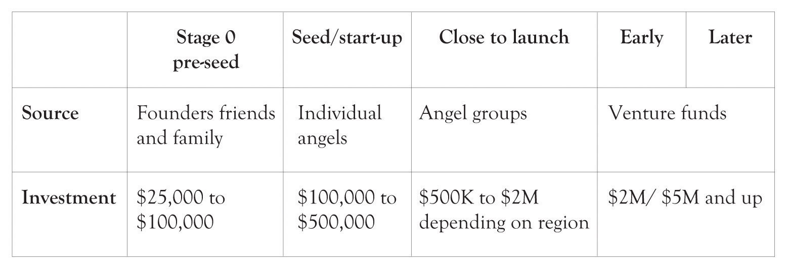
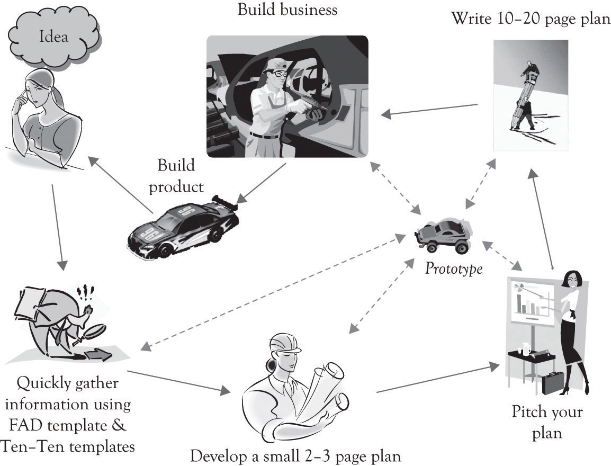

The terms strategic planning and business plan are often used interchangeably, even though they are different. The strategic planning process is essentially the upfront activity related to generating a business model. It involves using the analytical strategic planning approaches discussed in Chapter 8 "Strategic Planning and Ten–Ten Planning", such as value chain analysis, Porter’s five-force model, the resource-based view of strategy, the technology life cycle, and SWOT analysis among othersThe SWOT analysis is rarely part of the business plan and is usually not part of the business presentation. The purpose of a SWOT analysis is to assist the founders in understating what the business is all about and where it is heading. The strengths and opportunities will of course be woven into the business plan and the business plan presentation. But there is little to be gained from focusing on the threats and the weaknesses. Indeed, a significant part of the business plan and presentation involves developing strategies for dealing with weaknesses and threats.. In Chapter 9 "The Ten–Ten Planning Process: Crafting a Business Story", we introduced an abbreviated approach to planning, called the Ten–Ten planning process that can be quickly implemented and assist in bringing focus and clarity to the entrepreneur’s vision. You are encouraged to complete the FAD template, Organizational and Industry Analysis template, Business Plan Overview template and to develop an executive summary using the material in earlier chapters before you develop a full-scale business plan. There are two reasons for this. The first reason is that the material developed during the Ten–Ten planning will be very useful in developing a focused, more complete, and better plan. The other reason for using the Ten–Ten process is that business models evolve very rapidly; sometimes it is better to let the idea incubate and to present the plan to a variety of audiences before committing and finalizing the full-blown plan.
In this section, we will present a more detailed approach for constructing a full-blown business plan. The expanded business plan provides additional focus by adding details on the what, why, how, when, and for whom a product or service will be produced. The business plan is an abbreviated description of the business model (see Note 12.1 "The Business Model: Important Business Model Decisions"). The business plan is presented to the outside world through a business presentation and is accompanied by a business plan document.
Adapted from Afuah and Tucci (2001).
The business plan serves many purposes. The business planPresents a succinct overview of the what, how, when, and why of the business. It provides investors with a concise overview of what the business is about and how investors can make money. presents a succinct overview of the what, how, when, and why of the business. First, it is used to communicate with investors. It provides investors with a concise overview of what the business is about and how investors can make money. In many ways, the business plan is a prototype of the business model. It is a scaled-down version that describes how the business will function. The business plan also serves as a platform for the business founders to communicate and it can be used as a blueprint for operating the business the first year.Sahlman (1997, July-August). It also helps mentors and consultants to identify weaknesses, missed opportunities, strange assumptions, and overly optimistic projections. Finally, the business plan also serves as a tool for educating new employees on how the business works and how they will fit into the business activities.
There are several approaches for developing a business plan. The first approach is to thoroughly develop the business plan and then make a presentation to investors, other entrepreneurs, interested parties, and family members. The feedback from the presentation is then used to rewrite and modify the business plan. The updated business plan is then presented to the relevant parties. The major criticism of this approach is that too much time is spent developing the business plan and not enough time on refining and streamlining the business model.
The second approach consists of writing an executive summary, or a business concept paper, and then to prepare a presentation and deliver it to the relevant parties without any modification from presentation feedback. We have used this approach for over 10 years. Guy Kawasaki uses a similar technique called the pitch and plan approach.Kawasaki (2008).
Kawasaki believes that one purpose of the plan is to attract investors, but that the most important reason for developing a plan is to solidify the management team’s objectives. He believes that the executive summary plays a critical role in attracting investors and creating focus for the management team. He recommends pitching the idea first and then developing a full-blown plan.
As noted above, we completely agree with that assertion and have used a similar approach for years. The FAD template, the Business Plan Overview template, the executive summary, the business presentation, and the full-blown business plan are in reality prototypes of the business. They are all abbreviated business models. They give the management team, the founders, and the investors an opportunity to focus on something that represents the actual business. How many times have you heard the following refrains?
They just don’t understand our business model!
They just don’t understand what we’re doing!
One of the most important duties of the entrepreneur is to educate and facilitate the learning process of the management team, the founders, and investors. The objective should not be too obscure the way the business works, but rather to help interested parties understand why the business will work. The Ten–Ten planning approach coupled with the executive summary, the presentation, and the full-blown business plan should facilitate the learning process and lead to better communication. Better communication will in turn lead to an improved business model.
As noted throughout the book, a key activity for innovative activity is to engage in learning by doing. Learning by doing means that you make and build things, try experiments, and construct prototypes. Prototypes need to be constructed for tangible products and also for systems applications. If the product is a tangible product, then a generic mock-up of the product needs to be constructed as early as possible. If that is not possible, because of limited resources or an overly complex product, a handmade drawing with a graphics program or with CAD/CAM software or Google’s free SketchUp application can be used to develop a prototype. If the product is a computer application, then a prototype can be constructed using a rapid prototyping language or with a presentation package such as PowerPoint. There are also many excellent applications available for the iPad to develop mock-ups of applications and drawings for product ideas.
One interesting way of presenting the idea behind the business is to tell a story about how the product or service solved a problem. Presenting a problem and solution scenario is a very effective way for communicating a business plan concept. One business plan presentation used a clipart in the form of a scenario comic book to communicate the business concept. It involved a consumer coming home to find the inside of the house flooded. The story then went on to describe how the consumer would use a new emergency repair network to find a reputable contractor via a competitive bidding process. It was a very convincing story and quite effective in illustrating how the service was much different than the competition’s service. The goal of using a scenario is to get the readers to understand the details of what the business has to offer.
Note 12.3 "Business Plan Template Part 1" presents an overview of a business plan. It should not be viewed as a checklist, to be filled in extensively with bullet points and narratives. It should be viewed as a set of guidelines for constructing and developing a business model. Some of the subheadings for the sections may not even be addressed in the business plan and others may be addressed in great depth. It depends on the business context.
Business plan title
Business overview (2–3 pages)
Industry, economic, and regulatory analysis (2–3 pages)
Marketing strategy (1–3 pages)
Operations strategy (1–3 pages)
Human resource strategy (1–3 pages)
Financials and forecasts (1–3 pages)
Present a simple pro forma sources (cash inflows) and uses of funds (cash outflows) for 3 years after launching.
Present a simple pro forma income statement for 3 years after launching. Be sure to discuss assumptions for sales, expenses, and growth.
Stage of development and the implementation plan (1–2 pages)
Angel and venture capital funding (1–2 pages)
Appendices (1–5 pages)
Content is of course the king in all writing activities and this is also true for the business plan. However, the appearance and the look and feel of a document can often overcome minor deficiencies and sometimes hide major flaws. The most important element of the business plan is the “look.” It must look clean. In general, the business plan should be between 10 and 20 pages.An interesting book on the details of writing a business plan was published by Chambers (2007). Here are a few recommendations for preparing a business plan or an executive summary that will improve the way they look and read.
The first step in helping the reader to read is accomplished by having a document with the following features:
Simple fonts facilitate reading, understanding, and even the accomplishment of tasks. Psychologists at the University of Michigan conducted an experiment where they were trying to get 20-year-old college students to exercise.Herbert (2009). They divided the students into two groups. One of the groups received instructions for a regular exercise routine in an Arial typeface and the other received the same instructions in a Brush typeface. The subjects who had read the exercise instructions in Arial indicated that they were more willing to exercise and they believed that the routine would be easier and take less time than those subjects reading the instructions in a decorative typeface. They conducted another test in which two groups of students read instructions in preparing sushi rolls in a simple typeface and a decorative typeface. The results were similar. The students using the simple typeface instructions were more willing to attempt making sushi rolls than those reading from instructions in a decorative typeface.
Reader fatigue is an important issue. Another way to reduce fatigue is by changing the lengths of your sentences. For example, have two short sentences and one long sentence and one short sentence followed by one long sentence and then one short sentence. The idea is to mix up the sentence structure and create interest. The second method that fatigues readers is of course having too much to read.Guy Kawasaki posits that for every 10 pages over 20 you reduce reading and funding probability by 25%. This is particularly true when the business plan involves difficult and unfamiliar material. Succinct and clear writing coupled with informative figures and tables will alleviate reader fatigue. This is the essence of pithy writing. The length of the business plan narrative should usually be between 10 and 20 pages and rarely if ever exceed 20 pages. You can also add between 4 and 6 pages of figure, tables, and appendices. Graphics and tables are also important elements for assisting in chronicling and presenting the business plan. Tables and figures should always have numbers and captions, and they should always be referred to by their figure number or table number in the text.
The last point is extremely important. “Never present your business plan as a series of bullet points.” Remember, the goal of the business plan is to tell an interesting story. Bullet points need background and discussion. The business plan should never look like it was simply lifted from a presentation. This is a serious rookie mistake. Use bullet points sparingly and when you do use them, you need to discuss them, just as you would discuss a point during a presentation.
Finally, how can you cram all of this information into one business plan and not bore your readers. It requires hard work and constant refinement so that the core aspects of the business are communicated in less than 20 pages. Several trade-offs have to be made; some areas will expand and others will be reduced. Very few business plans look the same. They are highly differentiated. It is the role of the entrepreneur and the entrepreneurial team to educate and facilitate the learning process of the reader.
The business presentation is the dog and pony show. One of my students asked me whether the business presentation should be informational or a pitch. It should be both, and that is the ongoing dilemma for the presenters. Including the proper mix of information and creating excitement about the business is a difficult task. The presentation should have conveyed approximately the same content as the business plan, but in an abbreviated format (see Note 12.4 "Business Plan Presentation"). The goal is to maintain interest and communicate your ideas. The ideal number of slides for the presentation should be approximately one slide for each section. However, this can be increased if the slides are not too dense. This means that you will have to talk around the key concepts of each section. You do not want to read your slides. Just have the key concepts on the slide and talk around them. The most important thing you can do is practice your presentation and, if possible, memorize your notes. There are always limits on the length of the presentation and it is important to hit that mark within 30 seconds. Practice helps to convey the impression that you know what you are talking about and that you have the best product since sliced white bread. Guy Kawasaki suggests a 10/20/30 rule. That is 10 slides, for 20 minutes using a 30-point font. This is good advice, but it is sometimes necessary to extend the number of slides depending on the particular business context and the amount of content in each slide.
General guidelines for business plan presentations
Company overview (4 minutes)
Industry analysis (1 minute)
Marketing strategy (2 minutes)
Operations strategy (2 minutes)
Forecasts and financials (2 minutes)
Capital requirements over the next 3 years.
Stage of development and the implementation plan (1–2 minutes)
How much venture capital funding do you need? (1 minute)
Summary (30 seconds)
These are the restrictions I use: Questions (4 minutes): Total allowable time for presentation and questions is 19 minutes. Be sure to conduct a trial run of your presentation so that you will not go over the 15-minute presentation limit.
Be sure to illustrate a prototype or at least show an illustration of your product or service. The prototype could be an illustration, a picture, a diagram, an example report, a scenario, or a mock-up of your product or service. If you are developing a complex process that is hard to understand, then you should still try to convey the idea using some sort of flow diagram or business process diagram. The goal here is to try to get your audience to understand just what you are trying to sell and try to get them to buy your product or service. The goal is not to be vague or obscure. As noted earlier, the scenario is a very effective tool for communicating the business concept. An actual or even a fictional scenario can be a powerful tool for explaining how the product or service works. Scenario presentations can include live acting, movie clips, storyboards using clipart and drawings, simulations and even the use of stick figure animation.
The business should be pitched and presented several times before the final plan is developed. The business plan presentation along with the executive summary will help to structure the business and make it more focused, clear, and understandable. It is all part of the learning process consisting of learning-about and learning-by-doing. It is important to have someone document all the questions that arise during the presentation and then to try to understand what the questions mean. It could be simply that the business model was not communicated effectively during the presentation, or a critical issue was not considered and that it needs to be addressed. Businesses are emergent; they take time to design, build, and to be successful; and the pitch and presentation is a critical part of the growth process.
Investors invest in people and then they investigate the idea.Sahlman (1997, July-August). This is true even when your investors are your family and friends and when economic times are challenging. Superstars in music, cinema, and in baseball garner the accolades and ultimately the money because of their above-average expertise. Music and movie publishers and baseball general managers go to the superstars because they are a known commodity and have a track record for delivering hits. This is also true for start-ups. The investors look at the management team, the CIO, the VP’s of marketing, operations, and finance, and the lawyers in terms of their reputation, education, job history, and previous experiences with start-ups.
Many start-ups have difficulty in getting funds.See the following Web sites for an overview of funding issues and general entrepreneurial concepts: http://www.sba.gov/, http://www.entrepreneur.com/, http://www.nvca.org/ There are a variety of avenues for generating additional funds that do not involve the professional investors. The first search for funds usually includes savings, credit cards, home equity loans, bank loans, and selling equity to family, friends, and selling personal assets. Bootstrapping is the process of starting a business from scratch with little or no outside capital. The goal of bootstrapping is to minimize expenditures and to reinvest the cash flow generated by the start-up back into the business.
Figure 12.1 "Typical Amount of Funds Generated During Business Development" illustrates the typical level of funds that can be generated as the business grows.Applegate, Simpson, White, and McDonald (2010). Figure 12.2 "Funds Generation as Firm Grows" presents additional detail on where funds are generated as the business grows.Applegate et al. (2010).
Figure 12.1 Typical Amount of Funds Generated During Business Development
Figure 12.2 Funds Generation as Firm Grows

Here is a list of additional sources of funding to keep the business going as it grows and that the entrepreneur can turn to in lieu of professionally managed funds.
Sources of funds and their timing depend on the economic context, the type of business, and the capabilities and attitudes of the founders, and these figures reflect averages and processes that are forever changing.
Angel investorsVery early participants in funding start-ups. are very early participants in funding start-ups. When the amount of financing required is <$1 million, then the start-up should probably approach angel investors. The angel investors are usually not involved in managing the start-up. Angel investments range from $100K to $500K. Angel investors usually look for a 20–40% return on their investment after 3 years or somewhere between two and three times their original investment. For example, a $500K investment would return about $1M–$1.5M in three to 4 years with a 25% return. Not all of the investments by angel investors are successful (about 50%). A small percentage of the investments carry the load and subsidize the marginal and failed businesses.Applegate et al. (2010).
Venture capital fundsProfessionally managed funds that provide high-potential start-ups with funds in exchange for management fees and equity or shares of stock in the start-up. are professionally managed funds that provide high-potential start-ups with funds in exchange for management fees and equity or shares of stock in the start-up. Venture capitalists (VCs) invest between $1 and $20 million in a start-up, but it can vary. The venture capital funds are themselves funded by wealthy investors. The venture capital funds sometimes charge about 2–4% per year as a management fee. In addition, they charge 20–25% return (sometimes more) on their investment over the course of 5 years. So if a start-up borrows $5 million from the venture fund, then they may have to pay $100,000 in management fees per year (at 2%) and then pay out approximately $13.3 million in 5 years (at 20%) for the return on the VCs investment. The management fee is a kind of coaching or consulting fee. A typical fund can have 15–20 ventures with about half-generating returns. Only a few of the businesses are hits and the hits subsidize the failures and the marginally successful ventures.
There has been much criticism in the engineering community in reference to venture capital funds stifling innovation.Stuck and Weingarten (2005). Some of it is related to investing in start-ups with superstar management and some of this is related to the tendency of VCs to pursue incremental innovations where there are lower levels of risk. VCs are not interested in technology; they are interested in adding a business to their portfolio that has a good chance of generating above-average returns. They know that some start-ups will fail, and they rely on their knowledge and expertise and portfolio diversification to deliver a few successful start-ups. The point is that it is hard for the new entrepreneur to make a splash because there are no previous splash patterns. Start-ups with little experience usually rely on the founder’s money, family and friends, and a variety of other approaches to run the company (see http://brainz.org/startup-funding/ for an excellent overview of nonventure-capital fund sources). There are many opportunities to raise funds outside of professionally managed money and indeed that give the company’s founder a degree of control and flexibility that may exceed the benefits of securing funds that reduce flexibility and control and are accompanied by very high interest rates.
VCs are interested in firms that have the potential to acquire substantial market share in large markets.Sahlman (1997). They want to know whether the market is large, whether it is growing rapidly, and whether the start-up can capture some of that growth. They also want to know whether the business is scalable. A scalable business modelA business can shrink or grow very quickly with minor changes in the cost structure (variable costs and fixed costs). means that the business can shrink or grow very quickly with minor changes in the cost structure. In the best situation, growth should not increase variable costs and fixed costs (perhaps even decrease variable costs). Ideally, growth should not incur large fluctuations in business processes as new customers are added. Remember, however, that scalable growth is usually scalable within a relatively narrow range.
The potential investors will also want to know whether the start-up can acquire customers and keep them. They will also be interested in the market forecast. Savvy investors will question market forecasts that indicate that the firm will garner either 1% or 10% of the market. The 10% share of the market usually means that the market is relatively small and the start-up needs 10% to break even. The 1% usually means that the market is huge and the start-up will be lucky to acquire even 1%. Market forecasts need to be based on realistic assumptions, rather than based on what makes for easy spreadsheet construction. There should be a strong rationale why the start-up will acquire 10% of the market the first year and increase that share by 20% in subsequent years.
Guy Kawasaki has several good ideas for developing market forecasts. His first idea is to develop a forecast from the bottom-up. In this approach, the start-up would try and identify the number of sales outlets and then estimate how many items might be sold at each outlet. Another example would consist of looking at the number of sales contacts each week for each salesperson and then estimate the percentage that will be successful. This approach, admittedly, also relies on percentages and, in some ways, is also seat-of-the-pants as is the 10% solution. The important point in developing forecasts is to examine and test assumptions and to constantly refine the forecasts.
Suppose you are developing a green or environmentally friendly product line that is particularly attractive because of a government tax credit. What if the government rolls back the tax credit? Or what would happen if a key member of the management team leaves the company? What if interest rates sky rocket? What if a key employee deletes the design specifications of a new product? What if a disgruntled employee destroys the social networking application and backup files? It is impossible to have a fall-back plan for every situation. But if there are key people and key assumptions that will determine business success, then a contingency plan is essential.
RiskThe probability that some adverse event will happen that will have a negative impact on the start-up’s ability to survive. is the probability that some adverse event will happen that will have a negative impact on the start-up’s ability to survive. Risk managementAn attempt to identify adverse events within a company and in the external organizational environment, and in turn develop strategies to deal with the consequences. is an attempt to identify the adverse events within a company and in the external organizational environment, and in turn develop strategies to deal with the consequences. Many of the internal risks to the start-up are related to the critical assumptions involving the tenure of the management team, the ability to attract key personnel, the ability to set up key organizational systems such as operations and marketing, the ability to manage cash flows, and the ability to adapt untested technologies. There are also external industry-related risks related to the ability to forecast market growth, and the risks related to unforeseen competitors and unforeseen emerging technologies that might affect profitability. There are also external risks related to economic downturns, interest rates, government intervention, political movements, and even changes related to social norms. Risk assessment also has to be made in terms of the impact of adverse weather conditions, earthquakes, and other natural disasters.
As noted earlier, there is some danger in pointing out weaknesses and threats, but they need to be addressed in a surreptitious manner. This can be accomplished by presenting alternative scenarios and focusing on the probability of their occurrence. Contingency planning and risk assessment should be addressed in the business plan or at least informally documented and communicated among the founders of the business and key management employees.
Professional investors such as angels and VCs, potential employees, and family members use a variety of criteria for evaluating a business plan. The process of evaluating the plan is referred to as due diligence. The Merriam Webster dictionary defines due diligenceThe process of evaluating the plan. as:
Due diligence can be evaluated in terms of how careful investors are in evaluating a business plan and how diligent the founders are in preparing the business plan. There is evidence that when the investor is duly diligent, the business will have a greater chance of succeeding.Applegate et al. (2010). We also believe that due diligence becomes very important as the business emerges from the conceptualization stage and is being built. Due diligence becomes important when the shoe meets the pavement or rather when the entrepreneur starts interacting with the investor. Here are the modified definitions of due diligence:
We usually read about 20–40 business plans per year. We evaluate the plans in terms of organization and format of the plan, writing, and content. All three areas are interrelated, and it is our experience that hard work usually leads to a great format, good writing, and strong content. Table 12.1 "Due Diligence Checklist Questions Asked by Investors, Founders, and Employees" presents an overview of the major due diligence questions asked by investors, founders, and potential employees. It is one checklist that needs to be checked off. Some of the questions are more important to one group than to another. Just go through them before submitting the final plan. One thing is clear, if the writing style is poor and the plan is poorly organized, then it will be very difficult to sell your ideas. At least 2 or 3 people outside of the founding group should be sought to provide editorial support for the plan format and the content to insure that the plan makes sense.
Table 12.1 Due Diligence Checklist Questions Asked by Investors, Founders, and Employees
| Yes | No | Maybe | NA | Needs Work | |
|---|---|---|---|---|---|
| Could such a business make money? | |||||
| Solves a problem or presents unique opportunity? | |||||
| Is the business concept scalable? | |||||
| Is the market large and expanding? | |||||
| Has the target market been adequately identified? | |||||
| Is the product or service differentiable? | |||||
| Can customers be acquired at a reasonable cost? | |||||
| Can customers be locked-in? | |||||
| Is pricing addressed adequately? | |||||
| Are current and potential competitors identified? | |||||
| Addresses competition’s reaction to market entry? | |||||
| Is the marketing plan adequate and executable? | |||||
| Is the operation’s plan adequate and executable? | |||||
| Is the implementation plan adequate/executable? | |||||
| Are the projected financial statements reasonable? | |||||
| Can the key management personnel get the job done? | |||||
| Can the business be built and fulfill promises? | |||||
| Any hidden traps, oversights, oversimplifications? | |||||
| Is there contingency planning and risk assessments? |
Since we are on the topic of due diligence, this is a nice segue into the importance of attorneys in developing a business. Guy Kawasaki has identified a number of difficulties that arise when dealing with lawyers.http://blog.guykawasaki.com/2007/09/the-top-ten-six.html#axzz18O5LrqfG But Kawasaki also believes that lawyers are critical for the success of business start-ups.http://blog.guykawasaki.com/2007/10/ten-questions-1.html#axzz18OGNAE1M and http://blog.guykawasaki.com/2007/06/482413_for_lega.html#axzz18OGadUe2 Lawyers and entrepreneurs often have trouble interacting because lawyers focus on what can go wrong and the entrepreneur is the eternal optimist and focuses on getting things done. Entrepreneurs tend to embrace risk and focus on the prize, whereas lawyers tend to be risk averse and focus on what can go wrong. Entrepreneurial enthusiasm tempered with a bit of lawyerly caution can alleviate many hazards on the road to building the business. Lawyers can assist with the following activities:Illustrates the relationship between price and the quantity demanded. It can include different versions of a product on the curve and also segments each product version according to the willingness-to-pay characteristics of buyer groups.
A good starting place for information on the selection of legal counsel, working with accountants, and incorporating companies can be found at http://www.entrepreneur.com and http://www.sba.gov/. You probably do not have to include the lawyering and legal issues in the business plan, but you need to be aware that there are numerous legal issues and accounting issues that are looming. Professional expertise is expensive, but in some instances their advice is critical for successfully navigating through the legal and financial systems.
In this chapter, we have illustrated the process and the elements that are used to develop a full-blown business plan. The key points are the following:
The business plan is presented to the outside world through a business presentation and the presentation leads to the development of a short business plan document. An important part of developing the business plan is the learning-by-doing process. It is important that the emerging company make and build things, try experiments, and construct prototypes. Prototypes need to be constructed as early as possible for tangible products and also for systems applications. As illustrated in Figure 12.3 "Planning Process Is Ongoing an Iterative", the process is iterative and ends only after the business is not in existence.
Figure 12.3 Planning Process Is Ongoing an Iterative
The most important element of the business plan and the business presentation is the “look and feel.” The plan and the presentation should look clean and streamlined. The development of a business model and plan begins with the moment that the entrepreneur has the original aha experience; this is followed with a very brief strategic planning process (we recommend the Ten–Ten approach coupled with a FAD analysis) and this is in turn followed by the development of the executive summary.